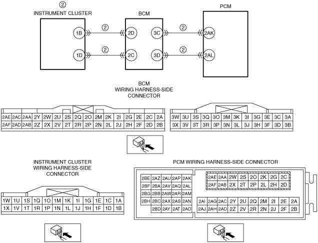

NO.2 CHECK ENGINE LIGHT ILLUMINATES [SKYACTIV-G 1.3, SKYACTIV-G 1.5]
id0103q1205000
|
2 |
CHECK ENGINE LIGHT ILLUMINATES |
|---|---|
|
DESCRIPTION
|
• Check engine light illuminates incorrectly.
|
|
POSSIBLE CAUSE
|
• Check engine light illuminates for emission-related concern (DTC is stored in PCM)
• Short to ground in wiring harness between the following terminals:
• Open circuit in wiring harness between the following terminals:
• Instrument cluster malfunction
|
 |
|
Diagnostic Procedure
|
STEP |
INSPECTION |
RESULTS |
ACTION |
|---|---|---|---|
|
1
|
VERIFY PCM DTC
• Retrieve any DTCs using the M-MDS.
• Are any DTCs present?
|
Yes
|
Go to the applicable DTC inspection.
|
|
No
|
Go to the next step.
|
||
|
2
|
INSPECT COMMUNICATION LINE BETWEEN PCM AND INSTRUMENT CLUSTER
• Inspect for a short or open circuit between the following terminals:
• Is the wiring harness normal?
|
Yes
|
Inspect the instrument cluster.
• If there is any malfunction:
|
|
No
|
Refer to the wiring diagram and verify whether or not there is a common connector between the following terminals:
• Instrument cluster terminal 1B—BCM terminal 2D
• Instrument cluster terminal 1D—BCM terminal 2C
• BCM terminal 3C—PCM terminal 2AK
• BCM terminal 3D—PCM terminal 2AL
If there is a common connector:
• Determine the malfunctioning part by inspecting the common connector and the terminal for corrosion, damage, or pin disconnection, and the common wiring harness for a short to ground or open circuit.
• Repair or replace the malfunctioning part.
If there is no common connector:
• Repair or replace the wiring harness which has a short to ground or open circuit.
|
||
|
3
|
Verify the test results.
• If normal, return to the diagnostic index to service any additional symptoms.
• If a malfunction remains, inspect the related Service Information and perform the repair or diagnosis.
|
||